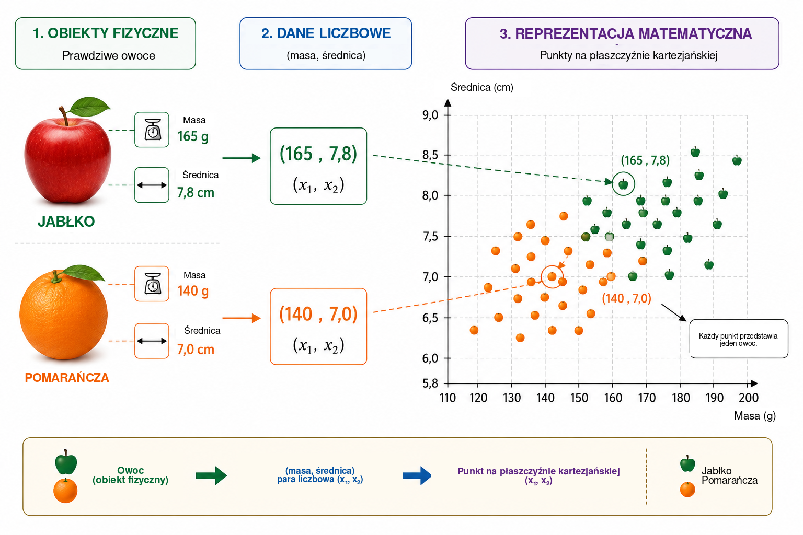
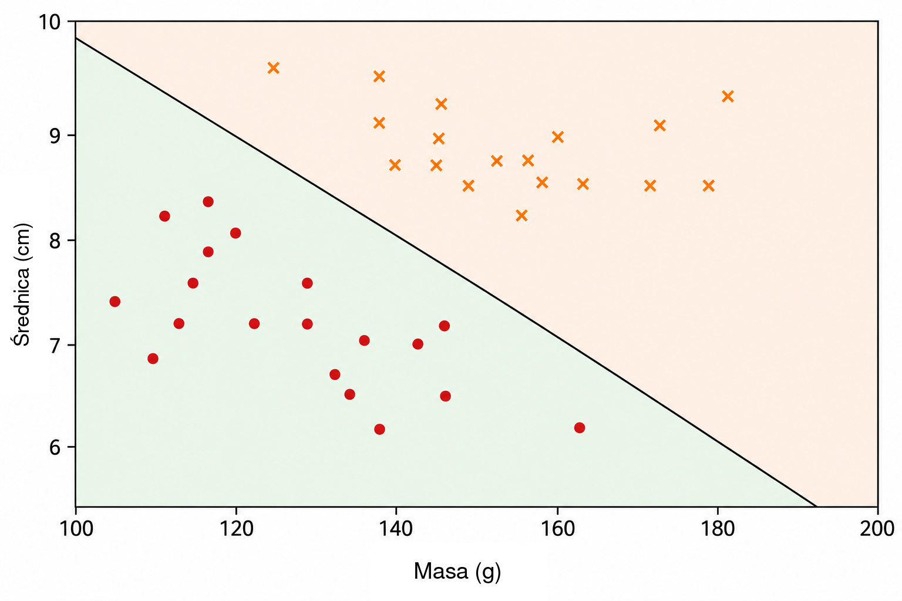
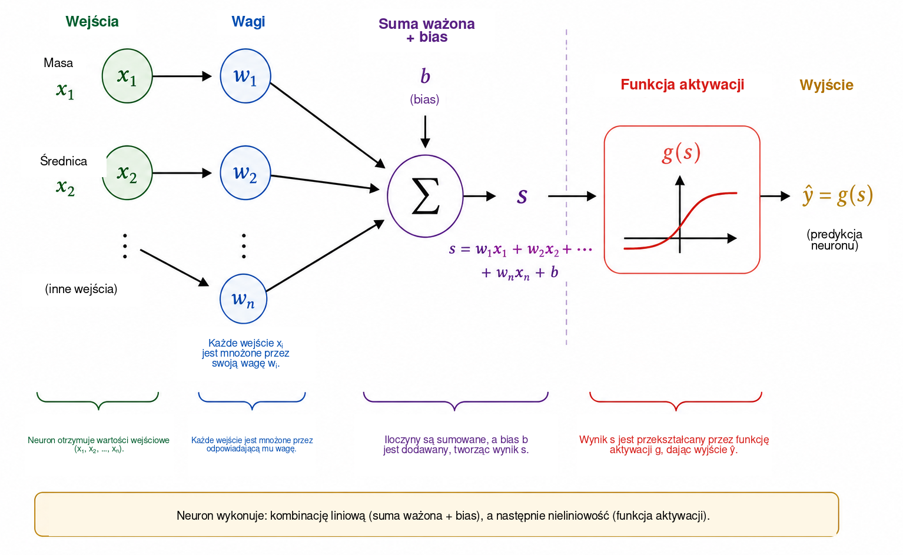
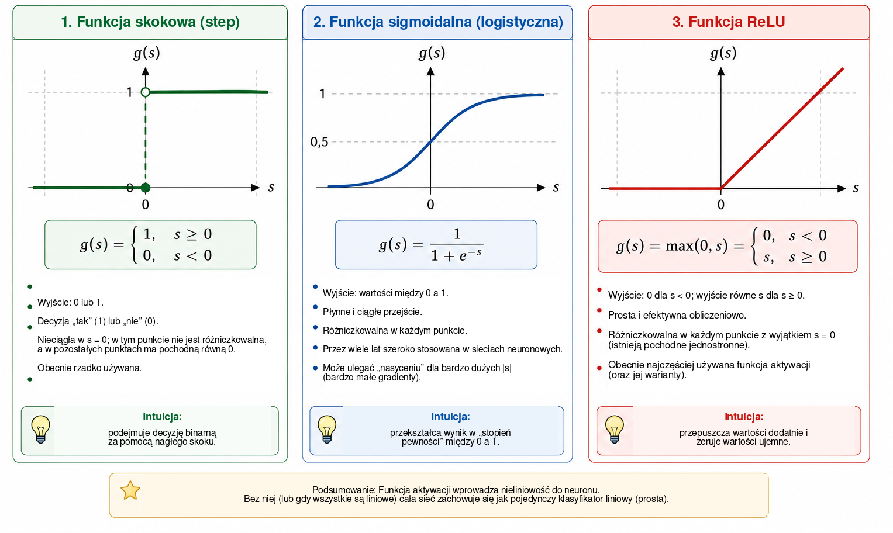
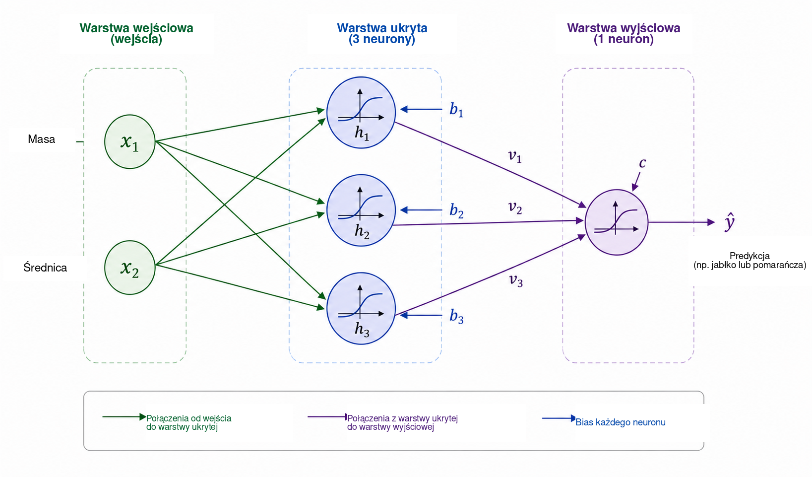
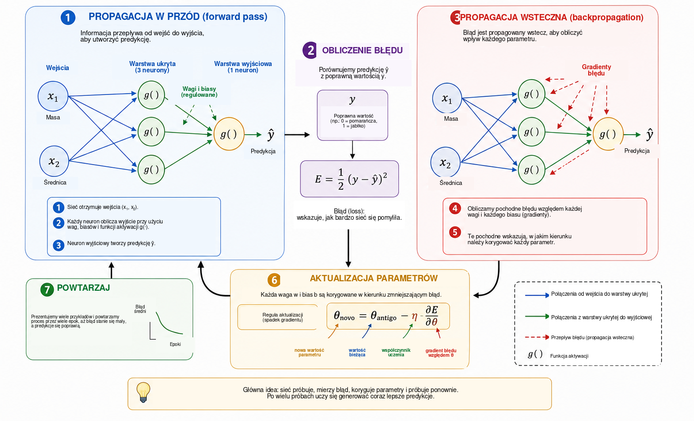
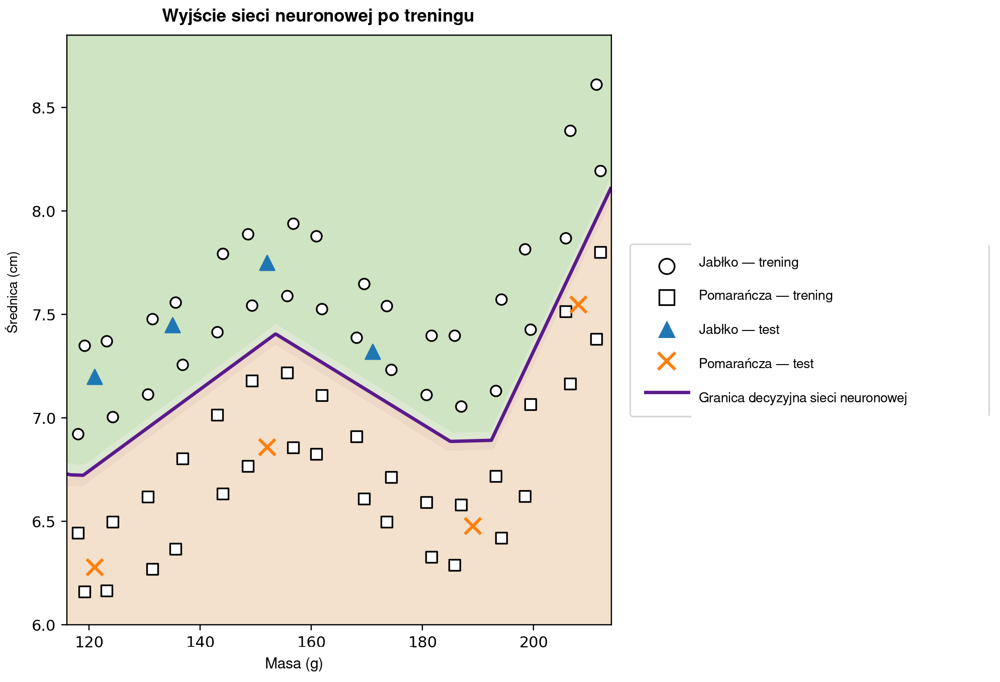

Kiedy komputer może się uczyć?
W życiu codziennym niemal bezwiednie podejmujemy decyzje klasyfikacyjne. Patrząc na owoc, szybko rozpoznajemy, czy jest to jabłko, czy pomarańcza; gdy na telefon przychodzi wiadomość, odróżniamy prawidłową korespondencję od niechcianej reklamy; w analizie medycznej kilka pomiarów może być łączonych, aby wesprzeć decyzję; a w instytucjach finansowych przed przyznaniem kredytu ocenia się wiele informacji. We wszystkich tych przykładach kilka cech rozpatruje się jednocześnie, aby uzyskać odpowiedź.
W wielu tradycyjnych programach komputerowych reguły prowadzące do takiej odpowiedzi są jawnie zapisane przez programistę. Podejście to działa dobrze, gdy reguły są znane i można je jasno sformułować. Staje się mniej skuteczne, gdy dane są bardzo zróżnicowane albo gdy trudno z góry określić wszystkie warunki potrzebne do podjęcia dobrej decyzji. Prowadzi to do naturalnego pytania:
Czy możemy zbudować program, który nauczy się reguły decyzyjnej na podstawie przykładów, zamiast otrzymać tę regułę z góry?
Jest to jedna z centralnych idei uczenia maszynowego, dziedziny sztucznej inteligencji zajmującej się metodami dopasowywania modeli do danych . W problemie uczenia nadzorowanego algorytm otrzymuje przykłady wraz z poprawnymi odpowiedziami, a naszym celem jest znalezienie modelu, który potrafi także generować użyteczne predykcje dla przypadków niewykorzystywanych podczas treningu. Wśród wielu modeli opracowanych w tym celu szczególne znaczenie zyskały sztuczne sieci neuronowe, stosowane między innymi w rozpoznawaniu obrazów, przetwarzaniu języka, analizie sygnałów i prognozowaniu szeregów czasowych .
Wykorzystanie sieci neuronowych jako pomostu między matematyką, obliczeniami i edukacją szkolną było już omawiane na łamach Professor de Matemática Online przez Batistę i Martinsa , którzy przedstawiają aktywność związaną z kształceniem nauczycieli, Pythonem i rozpoznawaniem cyfr. Niniejszy artykuł przyjmuje uzupełniającą perspektywę. Naszym głównym celem jest odsłonięcie matematyki wewnątrz niewielkiej sieci neuronowej, począwszy od geometrii analitycznej, a następnie przechodząc krok po kroku do obliczania gradientu i ręcznej implementacji propagacji wstecznej.
Mimo wyrafinowania współczesnych zastosowań matematyczny rdzeń sieci neuronowej można wprowadzić przy użyciu stosunkowo dobrze znanych pojęć. Na podstawowym poziomie sieć neuronowa jest złożeniem funkcji, których parametry są dostrajane na podstawie danych. Zaczynamy od prostego problemu geometrycznego, reinterpretujemy prostą rozdzielającą jako sztuczny neuron, łączymy kilka neuronów, analizujemy rolę funkcji aktywacji i pokazujemy, jak pochodne mogą służyć do automatycznej regulacji parametrów sieci. Następnie implementujemy kompletny, niewielki przykład w Pythonie, zachowując bezpośrednią zgodność między równaniami i kodem.
Matematyczna reprezentacja problemu
Aby zrozumieć działanie sieci neuronowej, zaczniemy od celowo uproszczonego problemu: odróżniania jabłek od pomarańczy. Owoc ma wiele cech, które mogłyby być przydatne w tym zadaniu, takich jak kolor, masa, średnica, tekstura czy zapach. Początkowy model matematyczny nie musi jednak obejmować całej tej złożoności. Wykorzystamy tylko dwie łatwo mierzalne wielkości: masę w gramach oraz średnicę w centymetrach.
Każdy owoc będziemy zatem reprezentować uporządkowaną parą \[(x_1,x_2),\] gdzie \[x_1=\text{masa} \qquad\text{oraz}\qquad x_2=\text{średnica}.\]
Para \((155,\;7.2)\) reprezentuje więc owoc o masie \(155\) g i średnicy \(7.2\) cm. Zastępując obiekt fizyczny dwoma pomiarami liczbowymi, przyporządkowujemy każdemu owocowi punkt na płaszczyźnie kartezjańskiej: pierwsza współrzędna oznacza masę, a druga średnicę. Rysunek 1 ilustruje tę reprezentację dla hipotetycznego zbioru jabłek i pomarańczy.

Ta transformacja zmienia sposób postrzegania problemu. Zamiast pytać bezpośrednio, jak rozpoznać jabłko lub pomarańczę, możemy zadać pytanie geometryczne: jak rozdzielić na płaszczyźnie punkty należące do dwóch klas? Taka zmiana punktu widzenia ma fundamentalne znaczenie w uczeniu maszynowym. Obrazy, teksty, dźwięki i sygnały eksperymentalne muszą zostać przekształcone w reprezentacje numeryczne, zanim algorytm będzie mógł je przetwarzać. W naszym przykładzie każdy obiekt ma tylko dwie współrzędne; w rzeczywistych zastosowaniach reprezentacja może zawierać setki, tysiące, a nawet miliony składowych. Zasada pozostaje ta sama: każdy przykład jest związany ze zbiorem liczb, a model poszukuje reguły odwzorowującej tę reprezentację na pożądaną odpowiedź.
Zaczynamy od najprostszej dostępnej reguły geometrycznej i pytamy, czy jedna prosta może wystarczająco dobrze oddzielić punkty odpowiadające jabłkom od punktów odpowiadających pomarańczom.
Prosta jako klasyfikator
Gdy każdy owoc zostanie przedstawiony jako punkt na płaszczyźnie kartezjańskiej, klasyfikacja staje się problemem geometrycznym: czy prosta może oddzielić jabłka od pomarańczy? To pytanie zawiera podstawową ideę ważnej rodziny metod uczenia maszynowego nazywanych klasyfikatorami liniowymi.
Rozważmy prostą przecinającą chmurę danych, jak na Rysunku 2. Prosta dzieli płaszczyznę na dwie półpłaszczyzny. Jeżeli większość punktów odpowiadających jabłkom leży po jednej stronie, a większość punktów odpowiadających pomarańczom po drugiej, położenie nowego owocu względem prostej może służyć jako reguła klasyfikacji. Po zmierzeniu jego masy i średnicy reprezentujemy owoc jako punkt i określamy, po której stronie prostej ten punkt się znajduje.

Na płaszczyźnie kartezjańskiej \((x_1,x_2)\) prostą można opisać równaniem \[w_1x_1+w_2x_2+b=0, \qquad (w_1,w_2)\neq(0,0).\]
Wektor \((w_1,w_2)\) jest prostopadły do prostej i dlatego wyznacza jej orientację, natomiast parametr \(b\) wpływa na jej położenie. Reprezentacja ta ma niewielką nadmiarowość: jednoczesne pomnożenie \(w_1\), \(w_2\) i \(b\) przez tę samą niezerową stałą daje dokładnie tę samą prostą. Parametry opisujące granicę nie są więc jednoznaczne. Ich interpretacja liczbowa zależy również od skali zmiennych. Ponieważ masa jest mierzona w gramach, a średnica w centymetrach, nie należy bezpośrednio porównywać wartości liczbowych \(w_1\) i \(w_2\) bez uwzględnienia różnych jednostek.
Samo równanie prostej daje prosty sposób określenia, po której stronie granicy znajduje się punkt. Zdefiniujmy wynik \[s(x_1,x_2)=w_1x_1+w_2x_2+b.\]
Jeżeli \(s(x_1,x_2)=0\), punkt leży na prostej. Gdy \(s(x_1,x_2)>0\), znajduje się w jednej półpłaszczyźnie; gdy \(s(x_1,x_2)<0\), w drugiej. Jeśli przyjmiemy, że dodatnie wartości odpowiadają jabłkom, a ujemne pomarańczom, reguła przyjmuje postać \[\begin{cases} s(x_1,x_2)\geq 0 & \Longrightarrow \text{jabłko},\\ s(x_1,x_2)<0 & \Longrightarrow \text{pomarańcza}. \end{cases}\]
Na przykład rozważmy granicę zadaną przez \[w_1=\frac{1}{10}, \qquad w_2=2, \qquad b=-30.\] Dla owocu o masie \(160\) g i średnicy \(7.8\) cm, \[\begin{aligned} s &=\frac{1}{10}\times160+2\times7.8-30\\ &=16+15.6-30\\ &=1.6. \end{aligned}\] Ponieważ wynik jest dodatni, punkt znajduje się w półpłaszczyźnie skojarzonej przez nas z jabłkami. Klasyfikator przypisałby więc temu owocowi etykietę jabłka.
Nie każdy wybór \(w_1\), \(w_2\) i \(b\) prowadzi do dobrej klasyfikacji. Niektóre proste słabo rozdzielają obie grupy, podczas gdy inne powodują mniej błędów. Problem uczenia polega właśnie na wykorzystaniu wcześniej oznaczonych przykładów do wyznaczenia wartości parametrów zmniejszających miarę błędu modelu. Zamiast programować położenie prostej bezpośrednio, chcemy, aby algorytm dostosował jej współczynniki na podstawie danych.
Jedna prosta może działać dobrze, gdy klasy są w przybliżeniu liniowo separowalne. Bardziej złożone zbiory danych mogą wymagać granicy nieliniowej. Zanim zajmiemy się tym ograniczeniem, zinterpretujemy skonstruowany klasyfikator jako podstawową jednostkę obliczeniową: sztuczny neuron.
Sztuczny neuron
W poprzedniej części wyrażenie \[s=w_1x_1+w_2x_2+b\] służyło do określenia, po której stronie prostej znajduje się owoc. To samo wyrażenie można traktować jako pierwszy etap obliczeń wykonywanych przez sztuczny neuron. Neuron otrzymuje wejścia liczbowe, łączy je przy użyciu wag i biasu, a następnie stosuje funkcję matematyczną, aby uzyskać wyjście.
W naszym przykładzie wejściami są masa \(x_1\) i średnica \(x_2\). Każde wejście jest mnożone przez parametr nazywany wagą; iloczyny są sumowane ze stałym składnikiem \(b\), nazywanym biasem (wyrazem wolnym). Rysunek 3 przedstawia schemat tego obliczenia.

Wagi określają, jak zmiany wejść wpływają na wynik. Jeżeli \(x_2\) i wszystkie pozostałe wielkości są stałe, zmiana \(\Delta x_1\) zmienia \(s\) o \(w_1\Delta x_1\). Analogicznie zmiana \(\Delta x_2\) zmienia wynik o \(w_2\Delta x_2\). Znaczenie ma także znak: dodatnia waga powoduje, że wzrost wejścia zwiększa wynik, natomiast ujemna waga wywołuje efekt przeciwny. Interpretację tę należy stosować ostrożnie, gdy zmienne mają różne jednostki i skale. Z tego powodu w praktycznych implementacjach dane wejściowe są często normalizowane lub standaryzowane przed treningiem.
Bias \(b\) jest stałym składnikiem przekształcenia afinicznego. Geometrycznie umożliwia przesuwanie granicy decyzyjnej. Gdy \(b=0\), równanie \[w_1x_1+w_2x_2=0\] wymusza przejście prostej przez początek układu współrzędnych. Obecność biasu pozwala przesunąć granicę w inne miejsce. Równoważnie, gdy \(x_1=x_2=0\), wynik jest po prostu równy \(s=b\).
Wynik nie musi być końcowym wyjściem neuronu. Ogólnie stosuje się do niego funkcję aktywacji \(g\): \[\widehat{y}=g(s)=g\left(w_1x_1+w_2x_2+b\right).\] Obliczenie ma zatem dwa etapy, \[\begin{aligned} s &= w_1x_1+w_2x_2+b,\\[4pt] \widehat{y} &= g(s). \end{aligned}\]
Dla wartości parametrów z poprzedniej części otrzymujemy \(s=1.6\). Jeśli wybierzemy funkcję skokową \[g(s)= \begin{cases} 1, & s\geq0,\\ 0, & s<0, \end{cases}\] wtedy \(\widehat{y}=g(1.6)=1\). Zgodnie z przyjętą konwencją owoc zostaje sklasyfikowany jako jabłko. Przy takiej aktywacji decyzja zmienia się, gdy \(s\) przechodzi przez zero, dlatego granica klas jest dokładnie dana przez \[w_1x_1+w_2x_2+b=0.\]
Pojedynczy neuron jest więc prostym obiektem matematycznym o regulowanych parametrach. Jego prawdziwe znaczenie ujawnia się przy łączeniu wielu takich jednostek. Zanim jednak zbudujemy sieć, musimy zrozumieć, dlaczego funkcja aktywacji jest tak istotna.
Dlaczego potrzebujemy funkcji aktywacji?
Neuron najpierw oblicza wynik za pomocą przekształcenia afinicznego, a dopiero potem stosuje funkcję aktywacji. Ten drugi etap jest niezbędny, jeśli sieć neuronowa ma reprezentować złożone zależności. Aby zobaczyć dlaczego, wyobraźmy sobie sieć bez funkcji aktywacji. Każda jednostka miałaby wtedy postać \[y=w_1x_1+w_2x_2+b.\]
Dla ilustracji jednowymiarowej załóżmy, że pierwsza jednostka wyznacza \[h=ax+b\] a druga oblicza \[y=ch+d.\] Po podstawieniu otrzymujemy \[y=c(ax+b)+d=acx+(cb+d),\] co nadal jest funkcją afiniczną zmiennej \(x\). To samo zachodzi w wielu wymiarach: złożenie przekształceń afinicznych pozostaje afiniczne. Dodawanie wielu warstw bez operacji nieliniowej nie zwiększa więc zasadniczo możliwości reprezentacyjnych sieci; całe złożenie można byłoby zastąpić jednym przekształceniem afinicznym.
Funkcja aktywacji przełamuje to ograniczenie. Po obliczeniu wyniku \(s\) neuron stosuje zwykle nieliniowe odwzorowanie \[h=g(s).\] Gdy połączymy kilka takich jednostek, powstałego złożenia nie można już sprowadzić do jednego przekształcenia afinicznego. Dzięki temu sieć może tworzyć bardziej złożone granice decyzyjne.
Najprostszą funkcją aktywacji jest funkcja skokowa, \[g(s)= \begin{cases} 1, & s\geq0,\\ 0, & s<0. \end{cases}\] Daje ona decyzję binarną i jest bardzo użyteczna do zrozumienia klasyfikacji. Jej pochodna jest jednak równa zeru dla \(s\neq0\) i nie istnieje w \(s=0\). Ponieważ uczenie gradientowe wykorzystuje pochodne do określenia, jak powinny zmieniać się parametry, funkcja skokowa nie nadaje się do takiego mechanizmu treningu.
Jedną z alternatyw jest funkcja sigmoidalna, \[\sigma(s)=\frac{1}{1+e^{-s}}.\] Odwzorowuje ona każdą liczbę rzeczywistą na wartość ściśle między \(0\) i \(1\). Dla bardzo ujemnych \(s\) wyjście zbliża się do \(0\); dla bardzo dodatnich \(s\) zbliża się do \(1\); między tymi skrajnościami przejście jest płynne. Funkcja sigmoidalna jest różniczkowalna wszędzie, przy czym \[\sigma'(s)=\sigma(s)\bigl(1-\sigma(s)\bigr).\] Ponieważ jej wartości leżą między \(0\) i \(1\), jest często stosowana w warstwie wyjściowej klasyfikatora binarnego. W ujęciu probabilistycznym, przy odpowiedniej funkcji straty, wyjście można interpretować jako oszacowanie prawdopodobieństwa klasy oznaczonej przez \(1\). W warstwach ukrytych sigmoid może jednak powodować trudność: dla wejść o dużej wartości bezwzględnej jej pochodna staje się bardzo mała, co przyczynia się do problemu zanikającego gradientu w głębokich sieciach.
Powszechnie stosowaną funkcją aktywacji w warstwach ukrytych jest ReLU (Rectified Linear Unit), \[\mathrm{ReLU}(s)=\mathrm{max}(0,s) = \begin{cases} 0, & s<0,\\ s, & s\geq0. \end{cases}\] Choć składa się z dwóch odcinków liniowych, ReLU nie jest globalnie liniowa. Jej pochodna jest równa \(0\) dla \(s<0\) i \(1\) dla \(s>0\). W punkcie \(s=0\) zwykła pochodna nie istnieje, dlatego implementacje programistyczne przyjmują określoną konwencję dla gradientu. Dla dodatnich wejść pochodna nie maleje wraz ze wzrostem \(s\), co pozwala uniknąć jednego z mechanizmów nasycenia funkcji sigmoidalnej.
Rysunek 4 porównuje wizualnie te trzy funkcje aktywacji: gwałtowny skok funkcji skokowej, płynne przejście sigmoidy oraz zmianę nachylenia ReLU.

Ich najważniejsze własności zestawiono poniżej.
| Funkcja | Wyjście | Pochodna | Typowe zastosowanie |
|---|---|---|---|
| Skokowa | \(\{0,1\}\) | Zero dla \(s\neq0\); nieokreślona w \(s=0\) | Modele historyczne i przykłady dydaktyczne |
| Sigmoidalna | \((0,1)\) | Istnieje dla każdego \(s\) | Warstwa wyjściowa w klasyfikacji binarnej |
| ReLU | \([0,\infty)\) | \(0\) dla \(s<0\) i \(1\) dla \(s>0\) | Warstwy ukryte |
Szczegóły tych funkcji różnią się, lecz ich wspólną rolą pojęciową jest wprowadzenie nieliniowości. To właśnie nieliniowość pozwala niewielkiej sieci z następnej części reprezentować zależności, których nie potrafi uchwycić pojedyncza prosta.
Czytelnikom zainteresowanym dalszym pogłębieniem tematu Haykin oferuje klasyczne ujęcie sieci neuronowych, natomiast Goodfellow, Bengio i Courville omawiają funkcje aktywacji oraz trening głębokich sieci w szerszym kontekście. Bezpłatnie dostępny tekst Nielsena jest szczególnie przystępny w budowaniu intuicji dotyczącej neuronów, aktywacji i uczenia.
Budowa małej sieci neuronowej
Rozważmy teraz sieć z dwoma wejściami, jedną warstwą ukrytą zawierającą trzy neurony oraz jednym neuronem wyjściowym. Wejścia pozostają następujące: \[x_1=\text{masa}, \qquad x_2=\text{średnica},\] i oba są podawane do każdego neuronu ukrytego, jak pokazano na Rysunku 5.

Niech wyjściami warstwy ukrytej będą \(h_1\), \(h_2\) i \(h_3\). Każdy neuron otrzymuje te same dwa wejścia, lecz ma własne wagi i bias: \[\begin{aligned} h_1&=g\left(w_{11}x_1+w_{12}x_2+b_1\right),\\[4pt] h_2&=g\left(w_{21}x_1+w_{22}x_2+b_2\right),\\[4pt] h_3&=g\left(w_{31}x_1+w_{32}x_2+b_3\right). \end{aligned}\]
Choć wszystkie trzy neurony otrzymują tę samą masę i średnicę, mogą dawać różne odpowiedzi, ponieważ ich parametry są różne. Podczas treningu parametry te są dostrajane tak, aby pośrednie aktywacje stały się użyteczne dla klasyfikacji.
Trzy wielkości \(h_1\), \(h_2\) i \(h_3\) są następnie przekazywane do neuronu wyjściowego, który oblicza \[s_{\mathrm{out}}=v_1h_1+v_2h_2+v_3h_3+c\] i wytwarza \[\widehat{y}=g_{\mathrm{out}}\left(s_{\mathrm{out}}\right).\] Dla naszego problemu binarnego używamy sigmoidalnego wyjścia: \[\widehat{y}=\sigma\left(v_1h_1+v_2h_2+v_3h_3+c\right), \qquad 0<\widehat{y}<1.\]
Przyjmując \(y=1\) dla jabłka i \(y=0\) dla pomarańczy, próg \(0.5\) prowadzi do decyzji klasowej \[\widehat{y}\geq0.5 \Longrightarrow \text{jabłko}, \qquad \widehat{y}<0.5 \Longrightarrow \text{pomarańcza}.\] Wartości bliskie \(1\) są więc silnie związane z jabłkami, natomiast wartości bliskie \(0\) z pomarańczami. Jak wspomniano wcześniej, numeryczna interpretacja \(\widehat{y}\) jako prawdopodobieństwa wymaga dodatkowych założeń dotyczących modelu i jego treningu. Dla używanej tutaj reguły klasyfikacji wystarczy traktować \(\widehat{y}\) jako ciągłe wyjście sieci.
Kluczową cechą tej architektury jest reprezentacja pośrednia \[(x_1,x_2) \longrightarrow (h_1,h_2,h_3) \longrightarrow \widehat{y}.\] Sieć otrzymuje dwie cechy i konstruuje trzy nowe wielkości przed wygenerowaniem końcowej odpowiedzi. Aktywacje te nie są wybierane ręcznie: zależą od wag i biasów, dlatego zmieniają się w trakcie treningu parametrów.
Mimo niewielkiego rozmiaru sieć ma już trzynaście regulowanych parametrów. Trzy neurony ukryte zawierają \[3(2+1)=9\] parametrów, a neuron wyjściowy wnosi \[3+1=4.\] Zatem \[9+4=13.\]
To samo zliczenie staje się przejrzyste w zapisie macierzowym. Zdefiniujmy \[\mathbf{x}= \begin{bmatrix} x_1\\x_2 \end{bmatrix}, \qquad W^{(1)}= \begin{bmatrix} w_{11}&w_{12}\\ w_{21}&w_{22}\\ w_{31}&w_{32} \end{bmatrix}, \qquad \mathbf{b}^{(1)}= \begin{bmatrix} b_1\\b_2\\b_3 \end{bmatrix}.\] Wtedy warstwę ukrytą można zapisać zwięźle jako \[\mathbf{h}=g\left(W^{(1)}\mathbf{x}+\mathbf{b}^{(1)}\right),\] gdzie \(g\) działa składowa po składowej. Dla wyjścia, \[\widehat{y} = \sigma\left(W^{(2)}\mathbf{h}+b^{(2)}\right),\] przy czym \[W^{(2)}= \begin{bmatrix} v_1&v_2&v_3 \end{bmatrix}.\]
Zapis ten zapowiada strukturę, która pojawi się w programie w Pythonie. Gdy owoc zostaje podany na wejście i obliczamy kolejne aktywacje aż do otrzymania \(\widehat{y}\), wykonujemy propagację w przód (ang. forward pass). Pozostaje kluczowe pytanie: jak automatycznie wyznaczyć trzynaście parametrów, aby predykcje były zgodne z danymi?
Jak uczy się sieć neuronowa?
Wagi i biasy nie są znane z góry. Muszą zostać dostrojone z wykorzystaniem przykładów, dla których znamy poprawną odpowiedź. Proces ten nazywa się treningiem i można go podsumować cyklem \[\boxed{\text{predykcja}} \longrightarrow \boxed{\text{pomiar błędu}} \longrightarrow \boxed{\text{aktualizacja parametrów}} \longrightarrow \boxed{\text{powtórzenie}}.\]
Rozważmy owoc o masie \(140\) g i średnicy \(7.0\) cm, którego poprawną klasą jest pomarańcza, a więc \(y=0\). Załóżmy, że w pewnym momencie treningu sieć daje wyjście \(\widehat{y}=0.80\). Prostą miarą różnicy między predykcją a wartością docelową jest błąd kwadratowy \[E=\frac{1}{2}\left(y-\widehat{y}\right)^2.\] W tym przykładzie, \[E=\frac{1}{2}(0-0.80)^2=0.32.\]
Wyrażenie to jest funkcją straty dla jednego przykładu. Ponieważ jest kwadratem, \(E\geq0\), a predykcje bardziej oddalone od wartości docelowej otrzymują większą karę. Czynnik \(1/2\) nie zmienia położenia minimum, lecz upraszcza pochodne. W klasyfikacji binarnej często stosuje się inne funkcje straty, zwłaszcza entropię krzyżową. Tutaj używamy błędu kwadratowego, ponieważ jego algebra jest przejrzysta i wystarcza do wprowadzenia optymalizacji oraz propagacji wstecznej .
Jeżeli zbiór treningowy zawiera \(N\) przykładów, jedną z globalnych miar jest średnia strata \[J=\frac{1}{N}\sum_{i=1}^{N}E_i.\] Każda predykcja zależy od wag i biasów sieci, dlatego \(J\) również zależy od wszystkich tych parametrów. Trening oznacza poszukiwanie takich wartości parametrów, dla których \(J\) jest małe.
Aby zrozumieć mechanizm dostrajania, wyobraźmy sobie najpierw, że wszystkie parametry poza jedną wagą \(w\) są ustalone. Możemy wtedy traktować stratę jako funkcję \(J=J(w)\). Rysunek 6 podsumowuje podstawowe etapy treningu, które teraz omówimy.

Dla czytelników z niewielkim przygotowaniem z rachunku różniczkowego pochodną można tutaj interpretować jako miarę lokalnej wrażliwości: mówi ona, jak niewielka zmiana jednego parametru wpływa na stratę. Jej znak wskazuje kierunek, w którym funkcja lokalnie rośnie lub maleje, a wartość bezwzględna mierzy siłę tej lokalnej zmiany.
Pochodna \[\frac{\partial J}{\partial w}\] określa lokalne nachylenie. Jeśli jest dodatnia, niewielki wzrost \(w\) powoduje zwykle wzrost \(J\), dlatego wagę należy przesunąć w przeciwnym kierunku. Jeśli jest ujemna, zwiększenie \(w\) lokalnie zmniejsza \(J\). Oba przypadki opisuje równanie \[w_{\mathrm{new}} = w_{\mathrm{old}} - \eta\frac{\partial J}{\partial w},\] które wyraża podstawową ideę spadku gradientu. Dodatnia liczba \(\eta\) jest współczynnikiem uczenia; steruje długością kroku. Bardzo mała wartość może spowolnić trening, natomiast zbyt duża może prowadzić do oscylacji lub niestabilności.
Dla sieci z wieloma parametrami niech \(\theta\) oznacza dowolną wagę lub bias. Aktualizacja przyjmuje postać \[\theta_{\mathrm{new}} = \theta_{\mathrm{old}} - \eta\frac{\partial J}{\partial\theta}.\] Zbiór wszystkich pochodnych cząstkowych tworzy gradient funkcji straty. Geometrycznie gradient wskazuje kierunek najszybszego lokalnego wzrostu, dlatego jego przeciwieństwo wyznacza lokalny kierunek spadku.
Pozostaje obliczyć te pochodne, gdy sieć jest złożeniem wielu funkcji. Podczas propagacji w przód informacja przepływa jako \[\text{wejścia} \longrightarrow \text{warstwa ukryta} \longrightarrow \text{wyjście}.\] Aby określić, jak parametr we wcześniejszej warstwie wpływa na stratę, matematycznie śledzimy łańcuch zależności w kierunku odwrotnym. Procedura ta nazywa się propagacją wsteczną (ang. backpropagation). Jest to w istocie systematyczne i wydajne zastosowanie reguły łańcuchowej. Rumelhart, Hinton i Williams stanowią klasyczne źródło dotyczące upowszechnienia tej procedury w sieciach z warstwami ukrytymi; Nielsen podaje szczegółowe i szczególnie dydaktyczne wyprowadzenie.
Dla prostego łańcucha zależności, w którym \(E\) zależy od \(\widehat{y}\), ta wielkość zależy od aktywacji \(h\), a \(h\) z kolei zależy od wagi \(w\), reguła łańcuchowa daje \[\frac{\partial E}{\partial w} = \frac{\partial E}{\partial\widehat{y}} \, \frac{\partial\widehat{y}}{\partial h} \, \frac{\partial h}{\partial w}.\] Każdy czynnik opisuje jeden etap wpływu \(w\) na końcową stratę. Większe sieci zawierają wiele takich łańcuchów, a propagacja wsteczna organizuje obliczenia tak, aby pochodne pośrednie mogły być ponownie wykorzystywane zamiast obliczane oddzielnie dla każdego parametru.
W praktyce trening wykorzystuje wiele przykładów. Jedno pełne przejście przez zbiór treningowy nazywa się epoką. Parametry mogą być aktualizowane po każdym przykładzie, jak w dydaktycznym programie użytym dalej w artykule, albo po małych grupach przykładów zwanych mini-batchami, co jest typowe w większych sieciach. W obu przypadkach cykl predykcji, strat, gradientów i aktualizacji jest powtarzany przez wiele epok.
Konkretnym sposobem wizualizacji tej ewolucji jest śledzenie predykcji dla jednego ustalonego przykładu na różnych etapach treningu. Rozważmy ponownie owoc o masie \(140\) g i średnicy \(7.0\) cm, którego poprawną klasą jest pomarańcza. Tabela 1 pokazuje hipotetyczny przebieg. Wartości te nie pochodzą z konkretnego uruchomienia programu; służą jedynie do ilustracji mechanizmu.
| Epoka | Predykcja \(\widehat{y}\) | Strata \(E\) | Klasyfikacja |
|---|---|---|---|
| 1 | 0.86 | 0.37 | Jabłko |
| 5 | 0.71 | 0.25 | Jabłko |
| 10 | 0.55 | 0.15 | Jabłko |
| 20 | 0.31 | 0.05 | Pomarańcza |
| 40 | 0.09 | 0.004 | Pomarańcza |
Na początku wyjście jest bliskie \(1\) i owoc zostaje błędnie sklasyfikowany jako jabłko. W miarę dostrajania parametrów predykcja maleje i w końcu przekracza próg \(0.5\), prowadząc do poprawnej klasy. W tym procesie zmieniają się wartości liczbowe wag i biasów; architektura sieci pozostaje niezmienna.
Zmniejszenie straty na danych treningowych nie jest celem ostatecznym. Użyteczna sieć powinna również dobrze przewidywać dla przykładów, które nie były używane do dopasowania parametrów. Zdolność ta nazywa się generalizacją. Gdy model zbyt mocno dostosowuje się do specyfiki zbioru treningowego i gorzej działa na nowych danych, mamy do czynienia z przeuczeniem (ang. overfitting). W bardziej starannych ocenach dane dzieli się zwykle na zbiory treningowy, walidacyjny i testowy: pierwszy służy do dopasowania parametrów, drugi wspiera wybory dokonywane podczas rozwijania modelu, a trzeci jest zachowany do końcowej oceny. Szersze omówienie generalizacji i oceny modeli można znaleźć u Faceliego i in. oraz Goodfellowa, Bengio i Courville’a .
Dotarliśmy zatem do matematycznego znaczenia uczenia w sieci neuronowej. W tym kontekście uczenie oznacza dostrajanie parametrów funkcji złożonej tak, aby zmniejszać miarę błędu na danych i, w idealnym przypadku, generalizować na nowe przykłady. Sieć generuje predykcję, oblicza stratę, wykorzystuje pochodne do określenia wpływu parametrów na tę stratę i wykonuje sekwencję niewielkich korekt.
Od matematyki do Pythona
Przechodzimy teraz od równań do wykonywalnego programu. Celem nie jest użycie wyspecjalizowanej biblioteki sieci neuronowych, lecz bezpośrednia implementacja za pomocą NumPy operacji matematycznych rozwijanych w całym artykule . Pozwala to zobaczyć, linia po linii, jak w kodzie pojawiają się kombinacje liniowe, funkcje aktywacji, obliczanie straty, propagacja wsteczna i spadek gradientu.
W bardziej przekonującym przykładzie końcowym używamy syntetycznego zbioru danych rozłożonego na szerszym obszarze płaszczyzny masa–średnica. Nadal pracujemy tylko z dwiema cechami fizycznymi — masą w gramach i średnicą w centymetrach — ale tym razem rozmieszczamy \(64\) przykłady treningowe na rozległym obszarze płaszczyzny i rezerwujemy osiem dodatkowych przykładów do ilustracyjnego testu. Dane pozostają syntetyczne i mieszczą się w wiarygodnych zakresach dla jabłek i pomarańczy. Zostały skonstruowane tak, aby prowadzić do nieliniowej granicy decyzyjnej bez skupiania wszystkich punktów w kilku nadmiernie sztucznych klastrach.
Idea geometryczna jest prosta. Definiujemy krzywą odniesienia na płaszczyźnie masa–średnica, umieszczamy jabłka w dwóch pasmach powyżej tej krzywej, a pomarańcze w dwóch pasmach poniżej niej. Do masy i średnicy dodajemy niewielkie deterministyczne zaburzenia, dzięki czemu obserwacje zajmują szerszy obszar. Otrzymany przykład jest bogatszy od wcześniejszych ilustracji: zawiera więcej punktów, dane są rozłożone na całej dziedzinie, a odpowiednia granica decyzyjna jest wyraźnie bardziej zakrzywiona niż prosta.
W tym końcowym eksperymencie obliczeniowym powiększamy warstwę ukrytą do dwunastu neuronów ReLU. Nie zmienia to struktury pojęciowej analizowanej w poprzednich częściach; zwiększa jedynie zdolność sieci do reprezentowania bardziej złożonej granicy. Zamiast \(13\) parametrów dydaktycznej sieci z trzema neuronami mamy teraz \(49\) regulowanych parametrów: \(24\) wagi i \(12\) biasów w pierwszej warstwie, a następnie \(12\) wag i jeden bias w warstwie wyjściowej. Równania zachowują dokładnie tę samą postać; większe stają się jedynie wektory i macierze.
Pełny program przedstawiono poniżej.
import numpy as np
import matplotlib.pyplot as plt
from matplotlib.lines import Line2D
def relu(s):
return np.maximum(0, s)
def relu_derivative(s):
return (s > 0).astype(float)
def sigmoid(s):
return 1 / (1 + np.exp(-s))
def base_boundary(m):
return 6.68 + 0.74*np.exp(-((m-155)/20)**2) \
+ 1.50/(1 + np.exp(-(m-202)/5))
def build_data():
masses_1 = np.linspace(118, 212, 16)
masses_2 = masses_1 + np.array([
1.2,-1.1,0.8,-1.3,1.0,-0.8,1.1,-1.0,
1.3,-0.9,0.9,-1.2,1.0,-1.0,0.8,-0.7
])
k = np.arange(16)
a1 = np.column_stack([
masses_1,
base_boundary(masses_1) + 0.22 + 0.05*np.sin(0.8*k)
])
a2 = np.column_stack([
masses_2,
base_boundary(masses_2) + 0.58 + 0.06*np.cos(0.45*k)
])
o1 = np.column_stack([
masses_1,
base_boundary(masses_1) - (0.22 + 0.04*np.cos(0.7*k))
])
o2 = np.column_stack([
masses_2,
base_boundary(masses_2) - (0.55 + 0.05*np.sin(0.5*k))
])
X_train = np.vstack([a1, a2, o1, o2])
y_train = np.array([1.0]*32 + [0.0]*32)
X_test = np.array([
[121.0, 7.20], [135.0, 7.45],
[152.0, 7.75], [171.0, 7.32],
[121.0, 6.28], [152.0, 6.86],
[189.0, 6.48], [208.0, 7.55]
])
y_test = np.array([1,1,1,1,0,0,0,0], dtype=float)
return X_train, y_train, X_test, y_test
def predict(X, mean, std, W1, b1, W2, b2):
Xn = (X - mean) / std
outputs = []
for x in Xn:
h = relu(W1 @ x + b1)
y_hat = sigmoid(W2 @ h + b2)
outputs.append(y_hat)
return np.array(outputs)
X_train, y_train, X_test, y_test = build_data()
mean = X_train.mean(axis=0)
std = X_train.std(axis=0)
Xn = (X_train - mean) / std
rng = np.random.default_rng(42)
W1 = 0.1 * rng.standard_normal((12, 2))
b1 = np.zeros(12)
W2 = 0.1 * rng.standard_normal(12)
b2 = 0.0
eta = 0.05
n_epochs = 6000
history = []
for epoch in range(n_epochs):
for i in rng.permutation(len(Xn)):
x = Xn[i]
target = y_train[i]
z1 = W1 @ x + b1
h = relu(z1)
z2 = W2 @ h + b2
y_hat = sigmoid(z2)
delta2 = (y_hat - target) * y_hat * (1 - y_hat)
dW2 = delta2 * h
db2 = delta2
delta1 = (delta2 * W2) * relu_derivative(z1)
dW1 = np.outer(delta1, x)
db1 = delta1
W1 -= eta * dW1
b1 -= eta * db1
W2 -= eta * dW2
b2 -= eta * db2
errors = []
for x, target in zip(Xn, y_train):
h = relu(W1 @ x + b1)
y_hat = sigmoid(W2 @ h + b2)
errors.append(0.5 * (target - y_hat)**2)
history.append(np.mean(errors))
def make_figure():
masses = np.linspace(116, 214, 500)
diameters = np.linspace(6.0, 8.85, 500)
M, D = np.meshgrid(masses, diameters)
grid = np.column_stack([M.ravel(), D.ravel()])
P = predict(grid, mean, std, W1, b1, W2, b2).reshape(M.shape)
fig, ax = plt.subplots(figsize=(9.2, 6.3))
ax.contourf(
M, D, P,
levels=[0.0, 0.25, 0.50, 0.75, 1.0],
colors=["#f3e0cb", "#ecd5c4", "#dbe7cf", "#cde3bf"],
alpha=0.95
)
ax.contour(M, D, P, levels=[0.5],
colors=["#5a1a8a"], linewidths=2.2)
mask = y_train == 1.0
ax.scatter(X_train[mask,0], X_train[mask,1], marker="o",
s=48, facecolors="white", edgecolors="black",
linewidths=1.1, label="Jabłko - trening")
mask = y_train == 0.0
ax.scatter(X_train[mask,0], X_train[mask,1], marker="s",
s=48, facecolors="white", edgecolors="black",
linewidths=1.1, label="Pomarańcza - trening")
mask = y_test == 1.0
ax.scatter(X_test[mask,0], X_test[mask,1], marker="^",
s=92, color="#1f77b4", label="Jabłko - test")
mask = y_test == 0.0
ax.scatter(X_test[mask,0], X_test[mask,1], marker="x",
s=110, color="#ff7f0e", linewidths=2.0,
label="Pomarańcza - test")
ax.set_xlabel("Masa (g)")
ax.set_ylabel("Średnica (cm)")
ax.set_title("Wyjście sieci neuronowej po treningu")
handles = [
Line2D([0],[0], marker='o', markersize=9,
markerfacecolor='white', markeredgecolor='black',
linestyle='None', label='Jabłko - trening'),
Line2D([0],[0], marker='s', markersize=9,
markerfacecolor='white', markeredgecolor='black',
linestyle='None', label='Pomarańcza - trening'),
Line2D([0],[0], marker='^', markersize=9, color='#1f77b4',
linestyle='None', label='Jabłko - test'),
Line2D([0],[0], marker='x', markersize=10, color='#ff7f0e',
linestyle='None', label='Pomarańcza - test'),
Line2D([0],[0], color='#5a1a8a', lw=2.2,
label='Granica decyzyjna sieci neuronowej')
]
ax.legend(handles=handles, loc='center left',
bbox_to_anchor=(1.02, 0.5), frameon=True)
fig.tight_layout()
plt.show()Choć kod jest dłuższy niż pierwsze równania analizowane w artykule, jego struktura pozostaje przejrzysta. Funkcja build_data() automatycznie generuje \(64\) przykłady treningowe oraz osiem ilustracyjnych przykładów testowych. Następnie standaryzujemy obie zmienne zgodnie ze wzorem \[x_j^{\ast}=\frac{x_j-\mu_j}{\sigma_j},\] gdzie \(\mu_j\) i \(\sigma_j\) są obliczane wyłącznie na podstawie zbioru treningowego. Zapobiega to wpływowi zbioru testowego na dopasowanie parametrów, a jednocześnie sprowadza masę i średnicę do porównywalnych skal liczbowych.
Propagacja w przód nie zmienia się co do istoty. Jedyną różnicą jest to, że pierwsza warstwa wytwarza teraz wektor dwunastu aktywacji ukrytych. W zapisie macierzowym, \[\mathbf{z}^{(1)}=W^{(1)}\mathbf{x}+\mathbf{b}^{(1)}, \qquad \mathbf{h}=\mathrm{ReLU}(\mathbf{z}^{(1)}),\] \[z^{(2)}=W^{(2)}\mathbf{h}+b^{(2)}, \qquad \widehat{y}=\sigma(z^{(2)}).\] Te cztery wiersze nadal zawierają matematyczny rdzeń algorytmu. Trening również zachowuje wcześniej wprowadzoną logikę: obliczyć predykcję, zmierzyć jej błąd, propagować informację o wrażliwości wstecz za pomocą pochodnych i aktualizować parametry małymi krokami spadku gradientu.
W kodzie propagacja wsteczna w warstwie wyjściowej pojawia się w instrukcji
delta2 = (y_hat - target) * y_hat * (1 - y_hat)a propagacja do warstwy ukrytej w instrukcji
delta1 = (delta2 * W2) * relu_derivative(z1)po czym następuje aktualizacja wszystkich wag i biasów. Ponieważ przykłady są mieszane w każdej epoce, a parametry aktualizowane po każdej obserwacji, implementacja ta jest elementarną postacią stochastycznego spadku gradientu.
Dla użytego tutaj ziarna generatora losowego i hiperparametrów końcowa średnia strata jest rzędu od \(10^{-5}\) do \(10^{-4}\), a wszystkie \(64\) przykłady treningowe wraz z ośmioma ilustracyjnymi przykładami testowymi otrzymują oczekiwaną klasyfikację. Nie należy interpretować tego jako rygorystycznej statystycznej oceny jakości: dane są syntetyczne i zostały skonstruowane w celach dydaktycznych. Ich rolą jest pokazanie, w mniej trywialnym otoczeniu, jak niewielka sieć neuronowa może nauczyć się wyraźnie nieliniowej granicy decyzyjnej.
Rysunek 7 przedstawia końcowy wynik programu na płaszczyźnie masa–średnica. Pokazano wszystkie punkty treningowe. Wyróżniona krzywa jest poziomicą \(\widehat{y}=0.5\) i reprezentuje granicę decyzyjną nauczoną przez sieć; zacieniowane obszary oznaczają dwie przewidywane klasy. Okręgi oznaczają jabłka treningowe, kwadraty pomarańcze treningowe, trójkąty jabłka testowe, a krzyżyki pomarańcze testowe. Legenda została umieszczona poza głównym obszarem wykresu, aby nie zasłaniać żadnego punktu danych.

Zaczęliśmy od prostej rozdzielającej dwie proste grupy punktów, a zakończyliśmy na bogatszym przykładzie obliczeniowym, w którym zakrzywiona granica powstaje w wyniku automatycznego dostrajania parametrów sieci. Do matematyki nie dodano niczego tajemniczego: implementacja jedynie organizuje i powtarza, na większą skalę i z dużą szybkością, kombinacje afiniczne, funkcje aktywacji, pochodne, iloczyny macierzowe i aktualizacje metodą spadku gradientu .
Wszystkie materiały obliczeniowe związane z tym artykułem — w tym kod oraz wykonywalny notatnik Google Colab — są dostępne pod adresem https://neuralmath.org, który stanowi jeden punkt dostępu dla czytelników chcących analizować, odtwarzać lub modyfikować przykłady.
Oświadczenie dotyczące wykorzystania AI.
Autor korzystał z ChatGPT, opracowanego przez OpenAI, jako narzędzia wspomagającego redagowanie, korektę językową, organizację wywodu oraz tworzenie ilustracji dydaktycznych. Autor ponosi pełną odpowiedzialność za ostateczną treść pracy, w tym za koncepcję i opracowanie materiału matematycznego, kod oraz wykorzystane źródła.